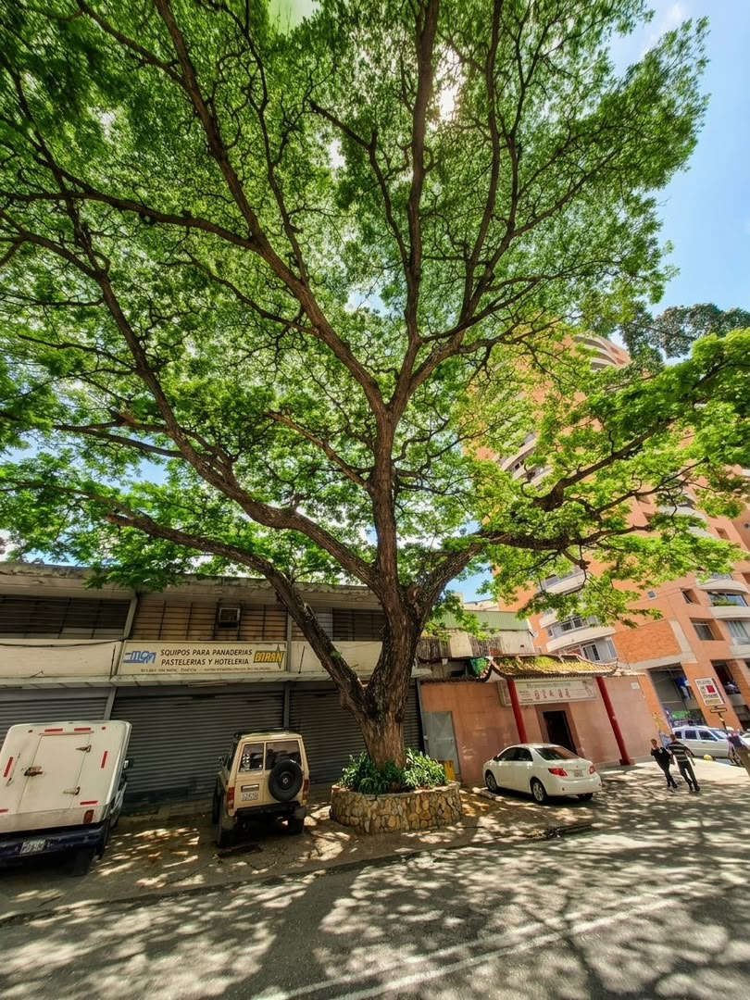
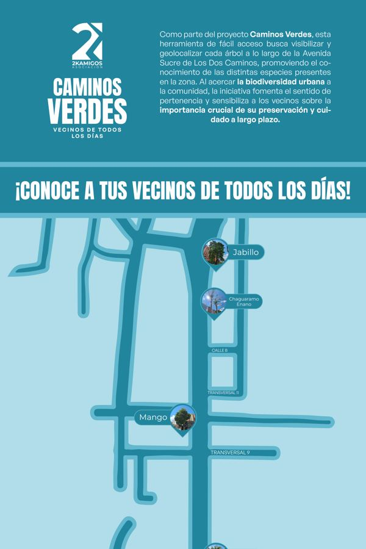
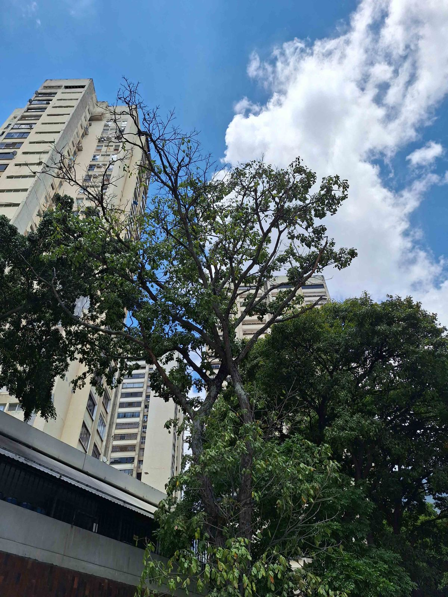

Sombra y frescura
Bajan la temperatura de calles y aceras, y hacen más agradable caminar.

Vecinos de todos los días
Recorre la Avenida Sucre de Los Dos Caminos, descubre las especies que nos acompañan cada día y aprende cómo cuidarlas.
Un programa de la Asociación de Amigos de Los Dos Caminos · 2KAMIGOS
27árboles en el mapa
12especies en el calendario
1avenida: la Av. Sucre
Mapa interactivo
Toca un árbol del mapa para ver su foto, su nombre y dónde encontrarlo en la Avenida Sucre.
El recorrido: Avenida Sucre de Los Dos Caminos, desde la intersección con la Av. Rómulo Gallegos, en la vía de la Universidad José María Vargas, hasta la Av. Los Chorros, a la altura de Manifiesto.
Ver el recorrido en Google MapsPellizca para ampliar · toca un árbol

Este es el mapa tal como fue diseñado, sin cambios. Al abrirlo, tu teléfono o computadora te permitirá ampliarlo con los dedos o con el zoom del navegador.
Abrir mapa en PDF (0,6 MB) Descargar original en alta calidad (18 MB)Calendario ambiental
Desliza o usa las flechas para recorrer los meses. Cada página conserva el diseño original del calendario.
Conoce Caminos Verdes
“Conocimiento, cuido, protección, plantado y defensa del arbolado urbano como factor de bienestar, equilibrio y calidad de vida en la comunidad doscaminera.”
Caminos Verdes busca que los vecinos conozcan y valoren los árboles de su entorno y participen activamente en su cuidado. Este mapa reúne los árboles de la Avenida Sucre para que cualquier persona pueda reconocerlos al caminar.

Bajan la temperatura de calles y aceras, y hacen más agradable caminar.
Sus hojas retienen polvo y producen oxígeno.
Sus raíces ayudan a que el suelo absorba el agua.
Dan refugio a las aves y hacen del barrio un lugar más sano y bonito.
Un árbol tarda muchos años en crecer y puede perderse en un día. Cuidarlos es cuidar nuestra calidad de vida y el patrimonio natural que compartimos.
Participa y cuida tu comunidad
No claves avisos, clavos ni alambres en los árboles.
Mantén las jardineras libres de basura y escombros.
No dañes raíces, ramas ni nidos: los árboles son hogar de otras especies.
Si ves un árbol en riesgo o una poda indebida, comunícate con 2KAMIGOS.
Súmate a las actividades ambientales y recorridos de Caminos Verdes.
Escanea el código QR, comparte el mapa y enseña los árboles a los más pequeños.
Sobre 2KAMIGOS
La Asociación de Amigos de Los Dos Caminos 2KAMIGOS es una organización comunitaria sin fines de lucro, que nos agrupa como vecinos y amigos de Los Dos Caminos, con el propósito fundamental de fomentar en esta comunidad el arraigo, el sentido de pertenencia y la participación ciudadana como factores vinculantes en el fomento de bienestar y calidad de vida.
El 10 de febrero de 2021 se configuró de manera explícita la asociación, con el acrónimo “AsoAmigos 2k”, para proponer y ejecutar proyectos en la comunidad. Hoy su acrónimo es 2KAMIGOS.
Contribuir con el fortalecimiento del tejido social y mejorar la calidad de vida de la comunidad de Los Dos Caminos, participando en la solución de los problemas que afectan a los vecinos, y a la vez promover la participación ciudadana mediante actividades educativas, lúdicas, culturales y de labor social que generen sentido de identidad, pertenencia, arraigo y compromiso ciudadano, en un marco armónico entre los residentes y todos los que hacen vida en Los Dos Caminos y su ambiente circundante.
Ser reconocidos como la Asociación de Amigos de Los Dos Caminos comprometida con el desarrollo y bienestar de la comunidad.